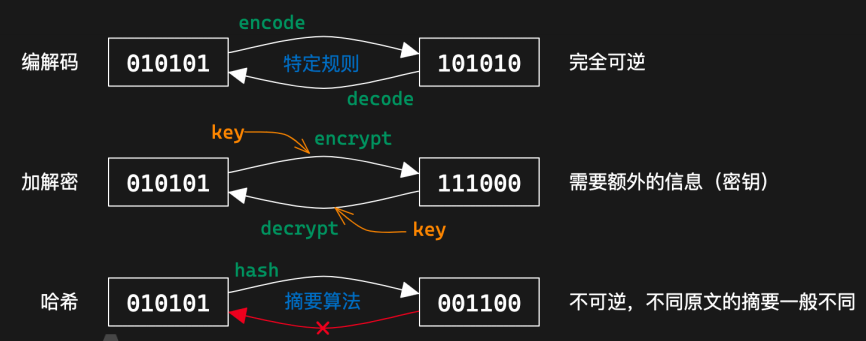
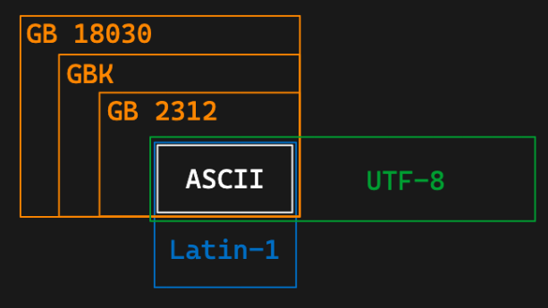
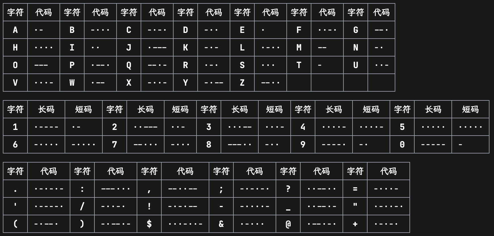
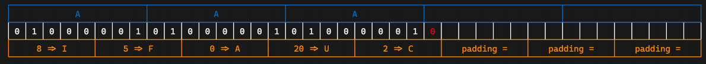
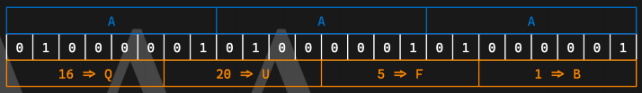
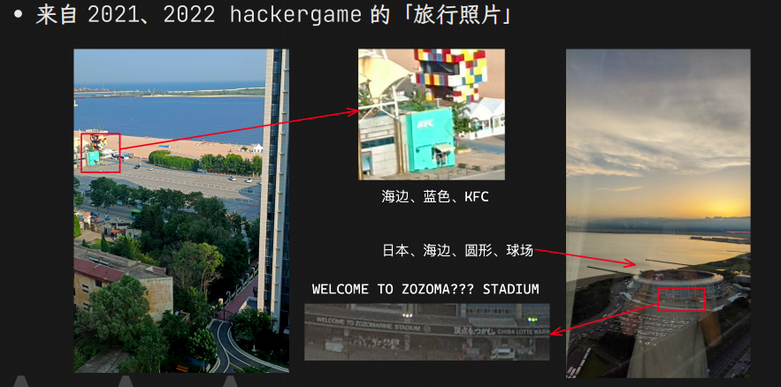
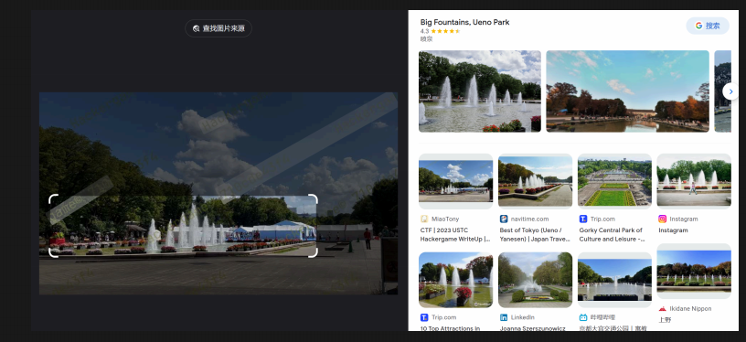
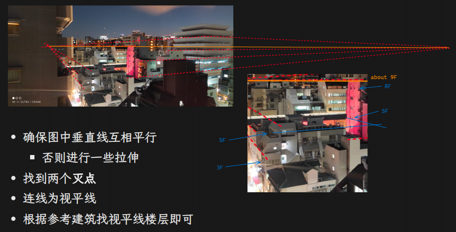

Misc Lec 1: 编解码及 OSINT⚓︎
参考
概述⚓︎
misc(miscellaneous)：杂项，除了其他四类大题型外的其他题目
- 题型：
- 签到题、签退问卷题
- 套娃题、谜语题
- 隐写、取证、OSINT（信息搜集
） 、PPC（编程类） ——传统 misc 题 - 游戏类题目（大概也算 PPC
） 、工具运用类题目 - 编解码、古典密码 ——不那么 crypto 的 crypto
- 网络解谜、网站代码审计 ——不那么 web 的 web
- 代码审计、沙箱逃逸 ——不那么 binary 的 binary
- Blockchain、IoT、AI ——新兴类别题目
- 一些例题
- 如何学习：
- 快速学习新知识、上手新工具
- 思维活跃
- 一定的编程能力
- 多做题积累经验，尝试站在出题人的角度
基础编解码知识⚓︎
3 种常见的位串转换方式：
- 编解码
- 加解密
- 哈希

字符编码：位串 \(\Leftrightarrow\) 人类理解的字符：
- ASCII：128 项，7 位位串 (1B)
- 00-1F：控制字符，20-7E：可见字符，7F：控制字符 (DEL)
- latin-1(ISO-8859-1)：ASCII 扩展版，256 项
- 80-9F：控制字符，A0-FF：可见字符
- 特点：任何位串都可以用其解码
- Unicode 字符集系列编码
- 以平面划分，17 个平面，每个平面 65536 个码位 (2B)
- 通过码位可以表示为 U+0000 ~ U+10FFFF
- 可容纳 111w+ 个字符，现有 14w 个字符（超一半为 CJK 字符）
- UCS(Universal Character Set)
- UCS-2：用 2B 表示码位
- UCS-4：用 4B 表示码位
- UTF(Universal Transformation Format)
- UTF-8：变长编码（1~4
） ，兼容 ASCII- 0xxxxxxx
- 110xxxxx 10xxxxxx
- 1110xxxx 10xxxxxx 10xxxxxx
- 11110xxx 10xxxxxx 10xxxxxx 10xxxxxx
- UTF-16：变长编码（2/4
） ，不兼容 ASCII - UTF-32
- UTF-8：变长编码（1~4
- 以平面划分，17 个平面，每个平面 65536 个码位 (2B)
- 中国国标字符集系列编码：GB 2312 / GBK / GB 18030-2022
字符集之间的关系：

乱码，常见类型有：
- 用 GBK 解码 UTF-8 编码的文本
- 用 UTF-8 解码 GBK 编码的文本
- 用 latin-1 解码 UTF-8 编码的文本
- 用 latin-1 解码 GBK 编码的文本
- 先用 GBK 解码 UTF-8 编码的文本，再用 UTF-8 解码前面的结果
- 先用 UTF-8 解码 GBK 编码的文本，再用 GBK 解码前面的结果
lab 要求自行研究这 6 种乱码情况，并给出分析
分析方法：CyberChef I/O 字符集设置、vscode 改变编码方案、Python 编解码 / 进制转换
摩尔斯电码：字符 \(\Leftrightarrow\) 字符
- 利用点划（“滴”的时间长短）表示字符
- 点 ·：1 单位；划 -：3 单位
- 点划之间间隔：1 单位；字符之间间隔：3 单位；单词之间间隔：7 单位
- 字符集：A-Z、0-9、标点符号（.:,; ='/!-_"()$&@+
） 、一些电码专用表示 - 表示中文：电码表（一个汉字对应四个数字
） ，数字使用短码发送

Base 编码：位串 \(\Leftrightarrow\) 位串
本质：位串 \(\rightarrow\) 整数 \(\rightarrow\) n 进制 \(\rightarrow\) 系数查表
- Base16：用 16 进制表示位串，长度翻倍
- Base32：5b 一组，按字符表（A-Z,2-7）映射，结果长度必须是 5 的倍数，不足用 = 补齐（最多会用 6 个）

- Base64：6b 一组，按字符表映射（最常用）
- 标准字符表：A-Z, a-z, 0-9, +, /
- 另有多种常见字符表，如 URL 安全字符表：A-Z, a-z, 0-9, -, _
- 结果长度必须是 4 的倍数，不足的用 = 补齐（1~2 个）

其他的 Base 编码：
- 分组 —— Base85：4B 整数 \(\rightarrow\) 85 进制 \(\rightarrow\) 5 个系数
- 常用字符表：0-9, A-Z, a-z, !#$%&()*+-;\(\Leftrightarrow\)>?@^_`{ }~
- 标准字符表：!-u（ASCII 编码中 0x21-0x75）
- 作为大整数转换进制：
- Base62：0-9, A-Z, a-z
- Base58：0-9, A-Z, a-z 去掉 0OIl（可能是因为这几个很容易被弄混）
- Base56：Base58 去掉 1 和 o（原因同上）
- Base36：0-9, A-Z
其他常用编码：
- UUencode, XXencode
- 二维码 (QR Code)
- 条形码
- 盲文编码
一些其他好玩的类编码：
- 北约音标字母
- 地点三词编码 What3Words
常用工具：
- CyberChef
- Base 系列爆破（Linux 命令）
- DenCode
- Cipher（Linux 命令
） ， （这个我目前没有安装成功，不知什么原因）
OSINT 基础⚓︎
OSI(Open Source INTelligence)：开源网络情报，通过完全公开的信息进行合理推理，获取情报，在 misc 题目中泛指信息搜集，有几种情况：
- 构造了一个全新的虚拟身份，搜集得到出题人准备好的信息
- 根据图片、文档等附件泄漏的信息进行推理（主要
） ，包括根据图片内容推理找到拍摄位置、当时环境等信息
警告
后续内容仅供 CTF 范围内学习交流，实操于现实世界时请注意法律法规，不要开盒！！！
常用工具：
- 一系列数字信息搜集工具
- 用户名批量查询：
- 高级搜索方式
- filetype: .
- site: .
- inurl: . intitle: . intext: .
- Wayback Machine
- 查找网页的历史快照（以及可以创建快照）
- 有时可以找到出题人特意保存快照后删除的内容
文件信息泄露
- 各种文档的元信息（metadata）可能包括作者、修改时间等信息
- 图片的 EXIF 信息，可通过 exiftool（Linux 命令）查看
- 一般以 xml 形式存储，可以直接通过二进制抹除，或者通过操作系统
- 工程文件夹泄漏信息
- Visual Studio 的各种配置文件，.vs 文件夹中信息
- .vscode 文件夹中的配置文件
- .git 文件夹，泄漏全部修改历史、提交信息、提交者等
- 文件夹路径信息泄漏
- .DS_Store 文件，macOS 下的文件夹布局信息
- 前面各种工程配置文件等也会泄漏（比如 vs 的 pdb 调试信息）
- markdown 文件图片路径（本地路径 / 图床用户 / 自建图床网站）
照片信息分析
- 图片搜素，常用搜索引擎：
- 百度识图搜索：中文互联网图片搜索结果
- Google 图片搜索：用来搜索外国范围的图片
- Bing 图片搜索：和 Google 差不多，都可以参考
- Yandex 图片搜索：搜索相似图片，搜索风景时更常用
- TinEye：搜索完全相同的图片（找来源）
- 地点线索搜集
- 注意图片中的文字、牌匾、标志性建筑等，可用来作为关键词搜索
- 找到大概位置后可用用百度全景地图 / 谷歌全景地图进行确认 / 查找附近线索
- 如果图片中关键信息较少，可以优先考虑使用搜索引擎识图
- 搜索确认得到地名后，即可进一步搜索相关信息
例题

2023 HackerGame

-
环境信息分析
- 常见题型：拍摄者高度分析（根据几何学透视
） ，比如
- 其他环境信息分析：
- 太阳角度、阴影长度等太阳相关，时间 \(\leftrightarrow\) 位置互相估计
- 天气信息、云层信息等
- 飞机航班信息：估计方向，位置，时间等
- 风景信息 \(\rightarrow\) Yandex 搜索
- 工具
- 常见题型：拍摄者高度分析（根据几何学透视
评论区
如果大家有什么问题或想法，欢迎在下方留言~